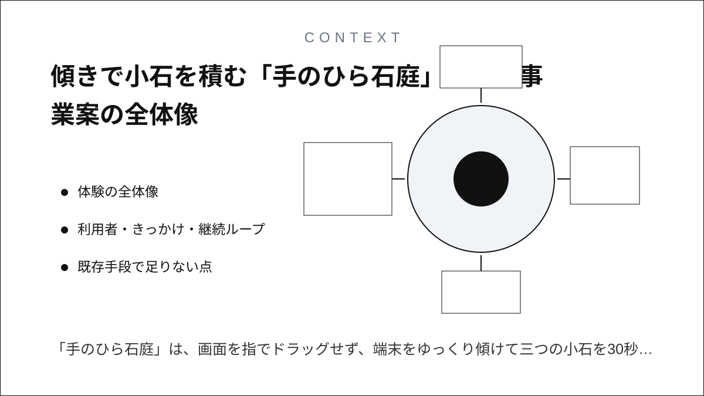
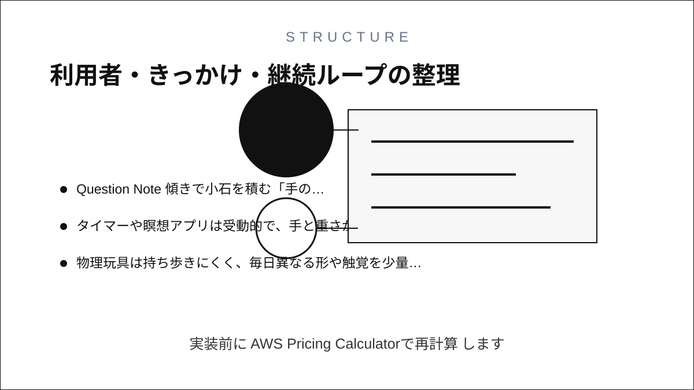
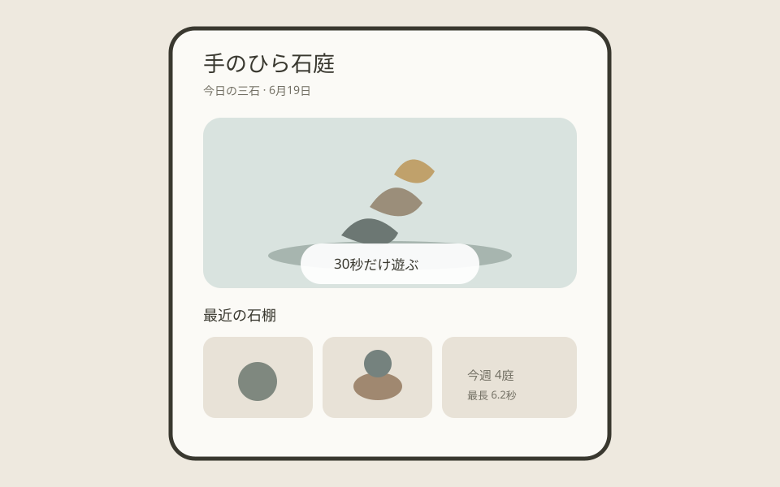
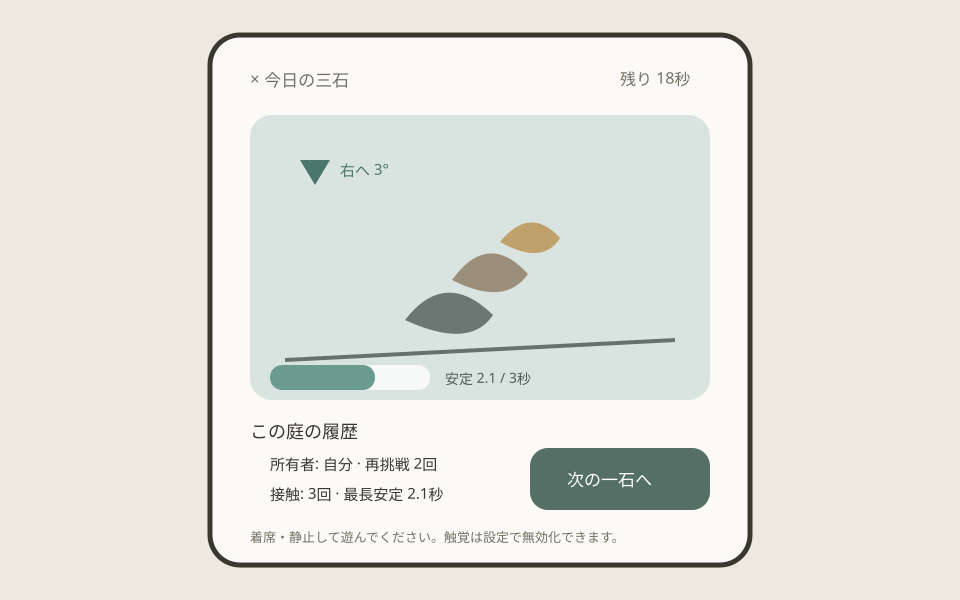
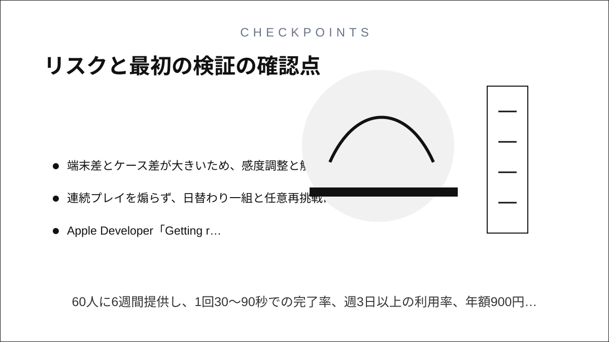

Question Note
傾きで小石を積む「手のひら石庭」アプリ事業案




体験の全体像
「手のひら石庭」は、画面を指でドラッグせず、端末をゆっくり傾けて三つの小石を30秒で積む小さな物理遊びです。成功すると衝突の強さに応じた触覚が返り、その日の完成形が一枚だけ棚に残ります。中心の楽しさは手の微細な動きと画面内の重さがつながり、短時間で偶然の均衡が生まれることです。
利用者・きっかけ・継続ループ
| 主対象 | 待ち時間や休憩に、広告や対戦のない短い触覚遊びを求める個人 |
|---|---|
| 状況トリガー | 電車を待つ前、仕事の区切り、就寝前の30秒 |
| 反復ループ | 今日の石を選ぶ → 傾けて積む → 3秒保つ → 完成形を棚へ置く |
| 端末面 | iPhoneの加速度センサー、Core Haptics、アプリ内石棚 |
| 内容差分 | 形、摩擦、重心、触覚、背景音を日替わりシードで組み合わせる |
既存手段で足りない点
- 一般的なゲームは指操作、スコア、広告、長いセッションが中心です。
- タイマーや瞑想アプリは受動的で、手と重さが反応する遊びがありません。
- 物理玩具は持ち歩きにくく、毎日異なる形や触覚を少量追加できません。
サービス構成と保持・支払い理由
- 毎日三つの小石セットを端末内シードで生成する。
- Core Motionの傾きを低周波で平滑化し、画面内の重力へ反映する。
- 接触、滑り、安定をCore Hapticsの短いパターンで返す。
- 完成形だけを棚に保存し、週末に7日分を眺める。
広告なし、オフライン完結、音を切っても成立する触覚、独自の石・庭テーマ、端末間の完成棚同期が保持・支払い理由です。健康効果はうたわず、30秒の玩具として提供します。
100万円規模に抑えた市場設定
| 到達可能利用者 | 触覚・ミニゲーム紹介経由で6,000人 | 短い動画で体験を伝える |
|---|---|---|
| 年額プラン | 900人 × 900円 | 810,000円 |
| 石庭テーマ | 700件 × 300円 | 210,000円 |
| 初年度売上 | 合計 | 1,020,000円 |
AWSシステム要件と支出
東京リージョン、1 USD = 150円、無料枠・クレジット除外、1,500 MAU、物理演算は端末内、同期は完成形・設定・購入権利のみの概算です。実装前にAWS Pricing Calculatorで再計算します。
| AWSリソース | 用途 | 想定使用量 | 月額 | 年額 |
|---|---|---|---|---|
| Amazon S3 | 石・庭テーマ、音素材、紹介サイト | 20GB | 600円 | 7,200円 |
| Amazon CloudFront | 購入テーマ素材の配信 | 月50GB | 1,300円 | 15,600円 |
| Amazon Cognito | 任意同期アカウント | 1,000 MAU | 600円 | 7,200円 |
| Amazon API Gateway | 完成棚・購入権利同期API | 月12万件 | 350円 | 4,200円 |
| AWS Lambda | 購入検証、週次棚画像生成 | 月14万実行 | 500円 | 6,000円 |
| Amazon DynamoDB | 利用者設定、所有者ID、日付、日替わりシード、石セット、完成座標、安定秒数、再挑戦回数、棚の並び、テーマ、購入権利、同期版、削除状態 | 4GB、月24万読書き | 1,000円 | 12,000円 |
| Amazon SES | 購入・同期復旧メール | 月1,000通 | 200円 | 2,400円 |
| Amazon CloudWatch | 同期・購入検証失敗の監視 | ログ2GB、6アラーム | 800円 | 9,600円 |
| AWS Backup | 完成棚と購入権利の日次復旧 | 10GB | 500円 | 6,000円 |
| AWS Budgets | 素材配信費の上限通知 | 2予算 | 150円 | 1,800円 |
| Amazon Route 53 | 紹介サイト・APIのDNS | 1ゾーン | 100円 | 1,200円 |
| AWS合計 | 小規模時の予算上限 | 6,100円 | 73,200円 | |
AIを使った開発見積もり
| 体験設計 | 石形状、難度、触覚案の発散 | 1週 |
|---|---|---|
| 試作 | Core Motion、物理演算、触覚 | 3週 |
| 本実装 | テーマ、同期、課金、テスト補助 | 6週 |
| 検証 | 端末差、酔い、アクセシビリティ | 3週 |
AIなしの約18週を約13週へ短縮します。物理の気持ちよさ、触覚強度、独自アート、端末安全は人が実機で判断します。
売上・支出・利益
売上 - 支出 = 利益
| 売上 | 1,020,000円 | 年額810,000円 + テーマ210,000円 |
|---|---|---|
| 支出 | 386,200円 | AWS 73,200円、ストア手数料等153,000円、3D・音・触覚制作120,000円、端末・告知40,000円 |
| 利益 | 633,800円 | 事業主の制作・運営人件費と税引前 |
必要人数と人材要件
iOS開発・運営1名 + 3D・音響の単発外注です。実行者がCore Motion、物理演算、Core Haptics、AWS同期、課金を担い、石の造形と音は外注します。
リスクと最初の検証
- 乗り物内や歩行中の利用を促さず、着席・静止時の注意を表示する。
- 端末差とケース差が大きいため、感度調整と触覚なしモードを用意する。
- 連続プレイを煽らず、日替わり一組と任意再挑戦に制限する。
60人に6週間提供し、1回30〜90秒での完了率、週3日以上の利用率、年額900円の購入意思を測ります。
